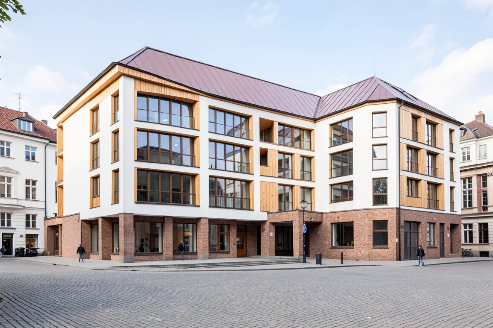

Modern architecture softened for a cold, dark climate: white plaster and brick, warm timber, daylight shaped with care and plans that bend to the site. Alvar Aalto, Arne Jacobsen and Sigurd Lewerentz made function humane.

Core thesis
Modern architecture should serve the whole person: use natural materials, scarce daylight and a human scale to make function warm.
Design principles
Bend the plan to the site and the sun: use wings, fans and courtyards at angles of 15 to 45° and not a rigid box.
Use natural materials in honest form: brick, timber and copper beside white plaster, with a tactile detail at every touch point.
Treat daylight as scarce: tall, deep-set windows, roof lights and light-coloured surfaces that spread low sun into the room.
Keep the scale human: ceiling heights of 2.4 to 3m in the rooms, and low massing of 2 to 4 storeys.
Design the fittings with the building: door handles, lamps, chairs and stairs in bent plywood and brass.
Join inside and outside with a terrace, a garden room or a courtyard, and let the landscape come into the plan.
Anti-patterns
Cold, rigid, glass-and-steel boxes without a human scale
Heavy applied ornament or historical pastiche
Large, undivided open-plan halls with no warm material
Large unshaded west-facing glazing in a low-sun climate
Synthetic, glossy finishes that hide the material
Plans that ignore site, slope, trees and orientation